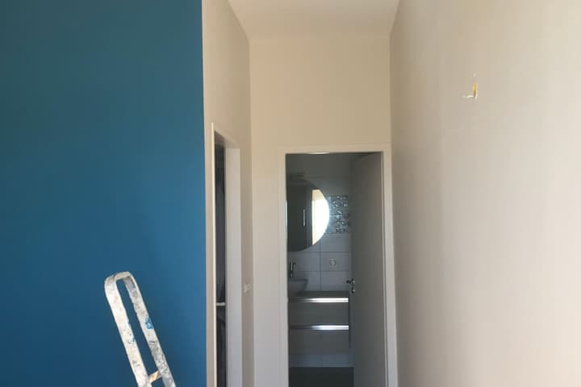
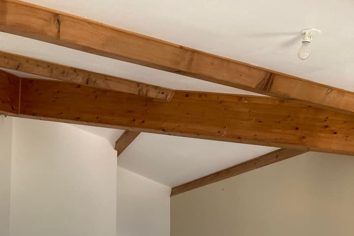
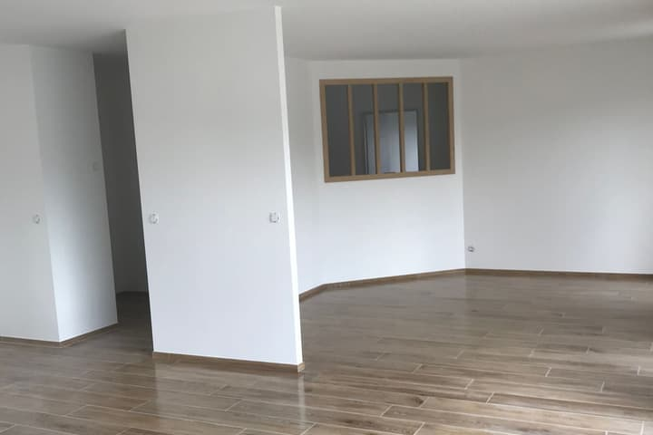
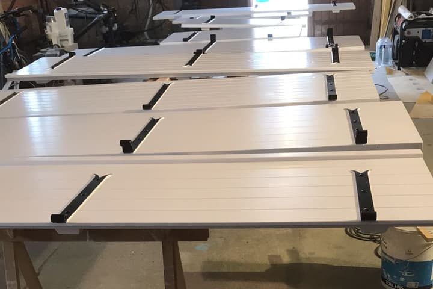
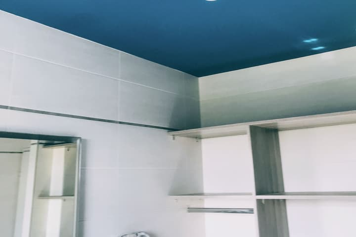
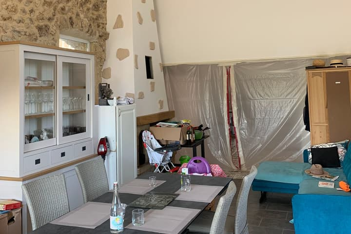

Di Giacomo Romuald intervient pour tous vos travaux de peinture à Saint-Péray et ses alentours. Peinture intérieure, préparation des murs, boiseries, volets et décoration — devis et déplacement 100% gratuits.
Devis gratuit à Saint-Péray
Estimation personnalisée sous 48h — déplacement offert
Une gamme complète de prestations de peinture et décoration réalisées avec rigueur et propreté par votre artisan local.

Murs, plafonds, portes, boiseries, radiateurs… Application soignée en finitions mates, veloutées ou satinées.

Enduit, rebouchage, lissage, ratissage et traitement des fissures pour des murs parfaitement sains.

Idéal avant une mise en location, une vente ou un emménagement : un logement remis à neuf.

Peinture et laquage des portes, boiseries, volets, portails et ferronneries.

Remise en état après sinistre : peinture isolante anti-taches, lissage et remise en peinture complète.

Protection de vos sols et meubles, nettoyage complet et finitions impeccables à chaque chantier.
Trois piliers fondamentaux pour des rénovations sereines et durables.
Préparation minutieuse des surfaces, masquage complet des sols et meubles, et produits professionnels réputés pour leur longévité.
Entreprise artisanale installée depuis 2006, reconnue en Ardèche et Drôme pour sa ponctualité, sa propreté de chantier et ses conseils avisés.
Devis détaillé sans surprise, incluant le temps de préparation, les couches de finition et le nettoyage final complet.
Saint-Péray, commune ardéchoise adossée au relief du Crussol, est renommée pour ses demeures et son cadre de vie. Les habitations y sont exposées aux éléments, ce qui impose des finitions de qualité, à l'intérieur comme sur les boiseries et volets.
Les boiseries et volets à Saint-Péray, exposés au soleil ardéchois et au Mistral, requièrent des laques, lasures et peintures à haute résistance aux UV. Notre intervention inclut un ponçage soigné et des primaires d'adhérence professionnels.
Murs, plafonds, boiseries et portes laquées sans odeur avec peintures veloutées dépolluantes.
Rebouchage, enduit, lissage et traitement des fissures pour des murs parfaitement sains.
Décapage, traitement microporeux et peinture laquée haute tenue face aux intempéries.
Traitement anti-humidité, assainissement et réfection rapide pour prise en charge assurance.
Vous avez un projet de peinture à Saint-Péray ? Retrouvez les réponses aux questions les plus fréquentes.
Nous nous déplaçons gratuitement chez vous à Saint-Péray pour évaluer les travaux, mesurer les surfaces et vous conseiller sur les teintes. Un devis détaillé et sans engagement vous est transmis sous 48h.
Le déplacement pour devis se fait sous 48h. Le démarrage du chantier est planifié selon vos disponibilités, généralement sous 1 à 3 semaines après acceptation du devis.
Nous utilisons exclusivement des peintures professionnelles haut de gamme (Seigneurie, Tollens, Guittet) classées A+, sans odeur entêtante, à faible teneur en COV et à séchage rapide.
Avant tout travail, nous bâchons l'ensemble des sols avec des protections épaisses, masquons les plinthes, fenêtres et prises, et protégeons votre mobilier. La propreté irréprochable du chantier est notre priorité absolue.